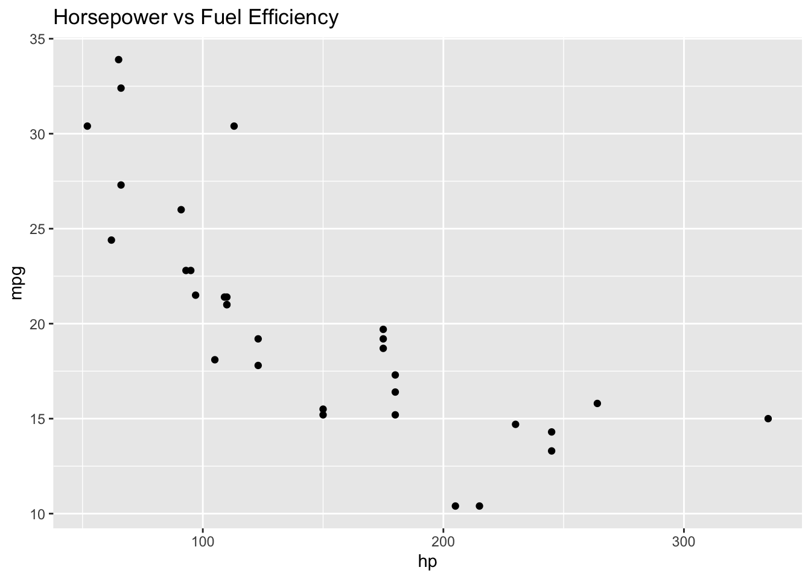
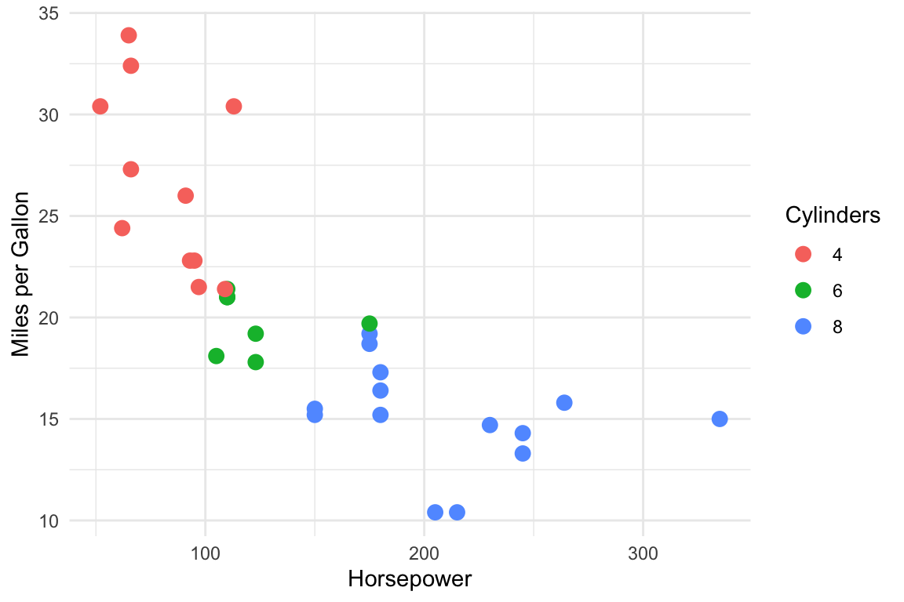

# This code will run when you render
x <- c(10, 20, 30, 40, 50)
mean(x)[1] 30Carolina Torreblanca
University of Pennsylvania
February 1, 2026
Quarto is a publishing system that lets you combine text, code, and output into a single document.
Why use Quarto?
.qmd files rendered to .htmlThe workflow:
.qmd fileEvery Quarto document starts with a YAML header between --- marks:
This controls the document’s metadata and output format.
Quarto uses Markdown for text formatting:
*italics***bold**[text](url)#, ##, ###Bullet points:
Numbered lists:
Use LaTeX for equations. Inline math: \(y = mx + b\)
Display equations:
\[ \bar{x} = \frac{1}{n} \sum_{i=1}^{n} x_i \]
Include images from your project folder:
Create tables by hand:
| Column 1 | Column 2 | Column 3 |
|---|---|---|
| A | B | C |
| D | E | F |
Add footnotes like this.1
The real power of Quarto is integrating code with your writing.
Insert R code in “chunks” that look like this:
When you render, the code runs and the output appears in your document.
Control how chunks behave with options:
#| echo: true # Show the code in output
#| echo: false # Hide the code, show only results
#| eval: false # Show code but don't run it
#| warning: false # Suppress warning messages
#| message: false # Suppress messagesSometimes you want to show results but hide the code:

The plot appears, but readers don’t see the code that made it.
Reference values directly in your text using inline code.
Write: “The dataset contains `r n_cars` cars with an average fuel efficiency of `r avg_mpg` mpg.”
Result: The dataset contains 32 cars with an average fuel efficiency of 20.1 mpg.
If your data changes, these numbers update automatically!
Give figures labels and captions for cross-referencing:
ggplot(mtcars, aes(x = hp, y = mpg, color = factor(cyl))) +
geom_point(size = 3) +
labs(x = "Horsepower", y = "Miles per Gallon", color = "Cylinders") +
theme_minimal()
Reference it in text with @fig-scatter: See Figure 1.
Warning: package 'dplyr' was built under R version 4.1.2
Attaching package: 'dplyr'The following objects are masked from 'package:stats':
filter, lagThe following objects are masked from 'package:base':
intersect, setdiff, setequal, unionmtcars %>%
group_by(cyl) %>%
summarize(
`Average MPG` = round(mean(mpg), 1),
`Count` = n()
) %>%
knitr::kable()| cyl | Average MPG | Count |
|---|---|---|
| 4 | 26.7 | 11 |
| 6 | 19.7 | 7 |
| 8 | 15.1 | 14 |
Reference with @tbl-summary: See Table 1.
To create the final output:
quarto render yourfile.qmdThe output (.html, .pdf, etc.) appears in the same folder.
.qmd file in RStudio (File → New File → Quarto Document)This is the footnote text.↩︎